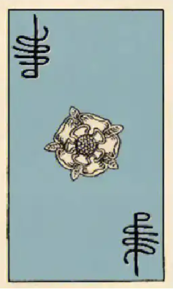

Daily divination is a common practice for Tarotists. It helps novices to memorise the meanings of the cards better, and for advanced scholars, they can get a more diversified understanding of the meanings of the cards through daily divination.
Doing a daily dowsing before you leave the house each day will not only be a practice, but it will also help you how to get through the day better. Even if the cards are abstract, I think it’s a great way for me to go and focus more on the experience of the day.
